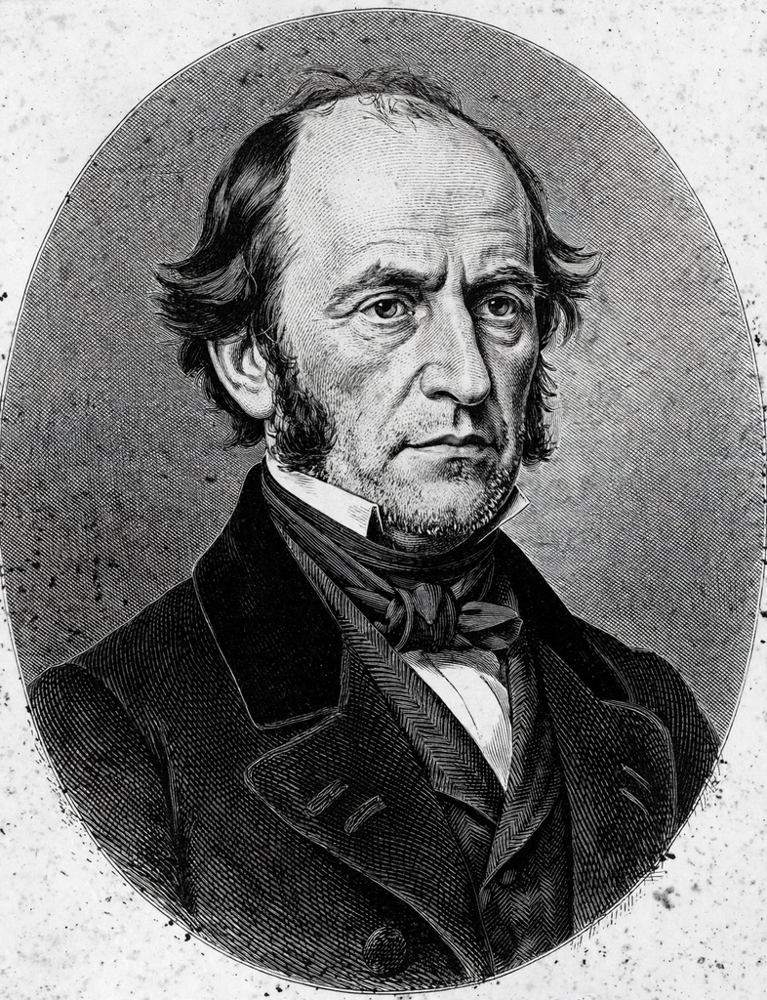

Carl Friedrich Gauss
| Born | 30 April 1777, Brunswick |
|---|---|
| Died | 23 February 1855 (aged 77), Göttingen |
| Known for | Disquisitiones Arithmeticae; number theory; Gaussian distribution; least squares |

[Image: a portrait of the elderly Carl Friedrich Gauss in a dark coat, from the famous lithograph, described from memory]Johann Carl Friedrich Gauss (30 April 1777 – 23 February 1855) was a German mathematician, astronomer, geodesist and physicist regarded as one of the greatest mathematicians of all time. Sometimes referred to as the Princeps mathematicorum ('Prince of Mathematicians'), he made fundamental contributions to number theory, algebra, analysis, differential geometry, statistics, astronomy, optics and electromagnetism.
A child prodigy — the famous story has him summing the integers 1 to 100 almost instantly at school — Gauss was supported by the Duke of Brunswick and studied at Göttingen, where he spent most of his career as professor of astronomy and director of the observatory.
Works
His Disquisitiones Arithmeticae (1801), written when he was 21, systematised number theory and introduced modular arithmetic and the law of quadratic reciprocity. The same year he predicted the orbit of the newly discovered asteroid Ceres from sparse observations, winning fame as an astronomer.
Gauss's later achievements include the fundamental theorem of algebra (his doctoral thesis), the method of least squares, the Gaussian distribution of statistics, non-Euclidean geometry (developed privately), the geometry of surfaces (his Theorema Egregium, 1827), the first practical telegraph (with Wilhelm Weber, 1833) and a pioneering survey of Earth's magnetism.
Legacy
The SI unit of magnetic flux density, the gauss, is named for him, as are numerous theorems, laws and prizes. His habit of publishing little but perfect work ('pauca sed matura' — few, but ripe) meant some discoveries were credited to others who published first; his posthumous papers revealed how far ahead he had often been.
Gauss's image appeared on the German 10-mark banknote, alongside the normal-distribution curve that bears his name.